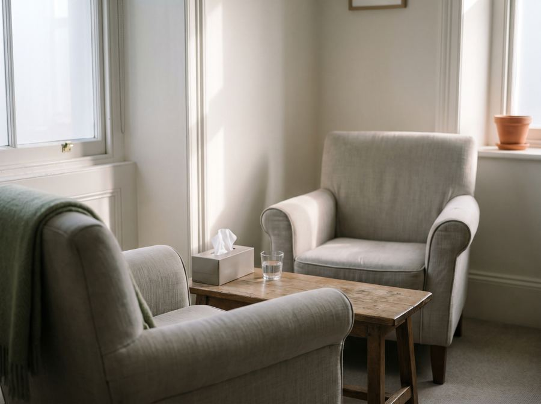

Para você
Terapia individual
Por fora está tudo funcionando. Você trabalha, resolve, responde a todo mundo. Só que faz um tempo que acordar ficou difícil — e você não sabe mais dizer desde quando.
- “Estou cansado de um jeito que dormir não resolve”
- “Sinto um aperto no peito sem motivo”
- “Parei de ter vontade de coisas que eu gostava”